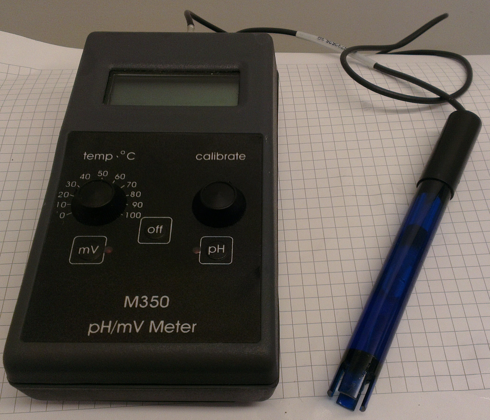
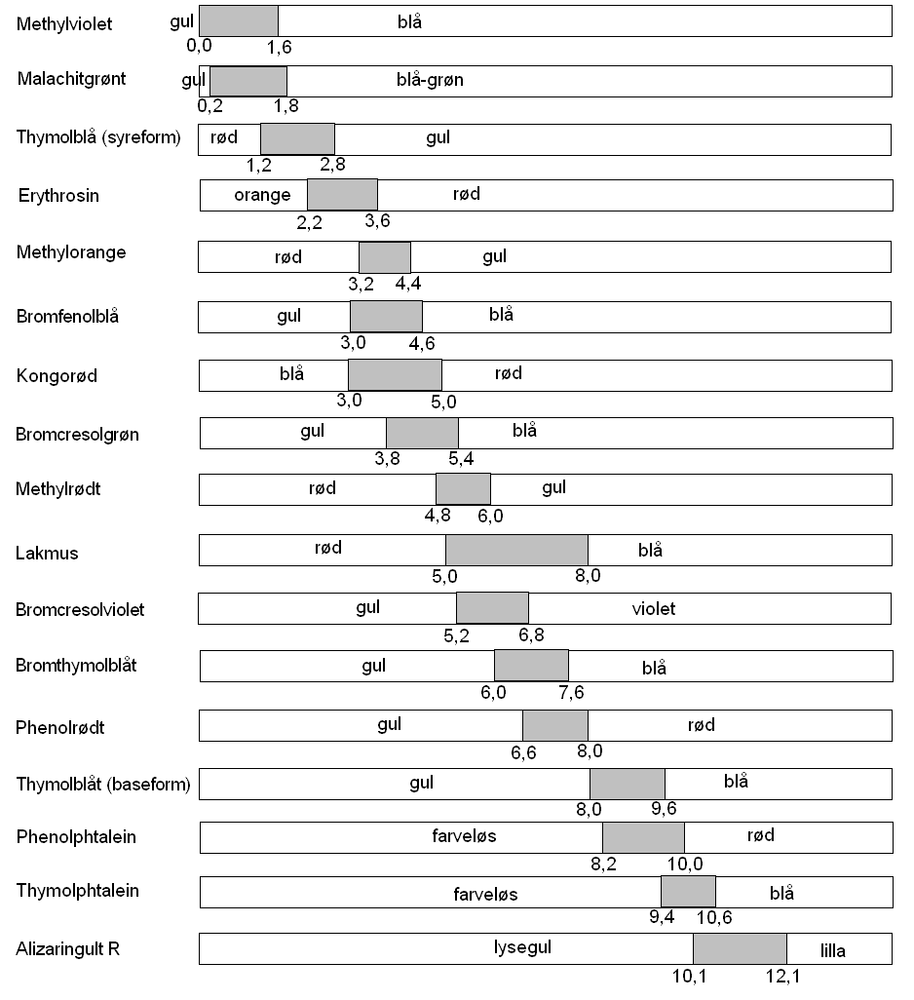

Formålet med dette kapitel er:
Mange syrer og baser kendes fra dagligdagen. Nogle eksempler er:
Ethansyre (CH3COOH): Husholdningseddike er en opløsning af ca. 5 % ethansyre i vand. Ethansyre kaldes slet og ret også for eddikesyre. Ethansyre kan også købes som en 32 % opløsning og bruges til afkalkning af kaffemaskiner og elkedler.
Citronsyre (C6H8O7): Citroner er sure fordi de indeholder citronsyre.
Phosphorsyre (H3PO4): Cola indeholder en stor del phosphorsyre, det giver colaen en syrlig smag.
Natriumhydroxid (NaOH): Fedt kan opløses af basen natriumhydroxid. Natriumhydroxid sælges derfor som afløbsrens.
Ammoniak (NH3): Landbruget bruger ammoniak som gødningsmiddel. En opløsning af ammoniak sælges under navnet salmiakspiritus (i øvrigt et ret misvisende navn) som rengøringsmiddel.
Der findes også en række syrer og baser, der ikke er så kendte fra dagligdagen, men som har stor betydning i industrien og landbruget. Nogle eksempler:
Svovlsyre (H2SO4): Dette er et af de mest fremstillede kemikalier overhovedet. Det bruges bl.a. til fremstilling af kunstgødning.
Salpetersyre (HNO3): Fremstilles også i store mængder, også til fremstilling af kunstgødning.
Saltsyre (HCl): Anvendes inden for mange områder i industrien, fx til metalrensning, i fødevare- og farveindustrien og til sukkerraffinering.
Calciumcarbonat (CaCO3): Er kendt som kalk (kalk er dog en flertydig betegnelse) og findes i store mængder i jordskorpen som aflejringer. En stor del af disse aflejringer er fra en periode der kaldes kridttiden (fra for 125 mio. år til for 65 mio. år siden).
I foregående afsnit er der givet eksempler på syrer og baser. Vi skal nu se på hvad en syre og en base mere præcist er.
En syre defineres som et stof der kan afgive en hydrogenion (H+). En hydrogenion kaldes også for en hydron.
En base defineres som et stof der kan optage en hydron.
Da hydroner ikke findes frit, vil en afgivet hydron (fra en syre) altid blive optaget af et andet stof - en base! Syrer og baser optræder altså altid i par; for at en syre kan afgive en hydron, skal der være en base der kan optage en hydron.
Hydrogenchlorid (HCl) er en gas ved stuetemperatur. Hydrogenchlorid kan opløses i vand (fx ved at lade hydrogenchlorid boble gennem vand), ved opløsningen sker der følgende:
HCl(g) + H2O(l) → Cl-(aq) + H3O+(aq).
HCl afgiver altså en hydron (H+) og er dermed en syre. Tilbage er der chloridionen (Cl-). Den afgivne hydron bliver optaget af vand (H2O) og derved dannes ionen H3O+. Denne ion kaldes for oxonium og dannes hver gang en syre kommer i vand. Da vand optager en hydron, optræder vand altså her som en base!
Ammoniak (NH3) er også en gas ved stuetemperatur. Også den kan opløses i vand, det sker ved følgende reaktion:
NH3(g) + H2O(l) → NH4+(aq) + OH-(aq).
Ammoniak optager en hydron og er altså en base. Hydronen afgives af vand, der altså her er en syre! Der dannes ionen OH- (hydroxid). Denne ion dannes altid når base kommer i vand.
En syre opløst i vand, kaldes for en sur opløsning. En base opløst i vand, kaldes for en basisk opløsning.
Bemærk at vand kan optræde både som en syre og en base, afhængig af omstændighederne. Et stof med disse egenskaber kaldes for en amfolyt. Faktisk kan vand reagere med sig selv:
H2O(l) + H2O(l) → H3O+(aq) + OH-(aq).
Denne reaktion kaldes for vands autohydronolyse. Denne reaktion er skyld i at der selv i helt rent vand findes både oxonium- og hydroxidioner. Koncentrationen af disse er dog meget lav, da det kun er nogle få vandmolekyler der reagerer som beskrevet.
Når syre kommer i vand, dannes der altid oxoniumioner (H3O+). Det er oxoniumioner der giver sure opløsninger deres sure smag.
pH-værdien (surhedsgraden) er et mål for hvor mange oxoniumioner der er pr. liter opløsning. Der gælder følgende for pH:
[1] Strengt taget kan vi godt have pH-værdier mindre end 0 eller større end 14, men i praksis sker det sjældent.
Bemærk, at det er sure og basiske opløsninger der har en pH-værdi, ikke syrer og baser.
Man kan måske undre sig over hvorfor der i det hele taget er oxoniumioner i basiske opløsninger. Det skyldes vands autohydronolyse, som beskrevet i et tidligere afsnit.
Den præcise definition på pH er følgende:
pH = -log([H3O+]),
hvor [H3O+] skal læses som "stofmængdekoncentrationen af oxoniumioner".
Log (logaritmen) er en matematisk funktion. På en lommeregner kan man beregne logaritmen til et tal.
Eksempel: Stofmængdekoncentrationen af oxoniumioner er 2,35·10-7 mol/L. pH kan nu beregnes som
pH = -log(2,35·10-7) = 6,63.
Måling af pH kan ske på to måder: Med pH-meter og med syrebaseindikator.
Et pH-meter er et apparat der direkte kan måle pH. Til pH-metret tilsluttes en elektrode der stikkes ned i den væske man vil måle pH-værdien af. Værdien aflæses på et digitalt display.

En syrebaseindikator er et stof hvis farve afhænger af pH-værdien. Eksempelvis er indikatoren methylrødt rød ved pH lavere end 4,8 og gul ved pH højere end 6,0. I mellemområdet (4,8 til 6,0) er den orange. Hvis man derfor tilsætter et par dråber methylrødt til en opløsning og methylrødt er gul, kan man konstatere at pH er højere end 6,0 i opløsningen.
Området hvor indikatoren slår om fra en farve til en anden, kaldes omslagsområdet. For methylrødt er omslagsområdet altså 4,8-6,0.
Indikatorer fås også i form af indikatorpapir. Papiret dyppes i væsken og den farve papiret får, sammenlignes med en farveskala på æsken med indikatorpapir.
En række indikatorer er vist på figur 13.2.
Figur 13.2: Syrebaseindikatorer.
Syrer og baser kan opfattes som hinandens modsætninger. Sure opløsninger kan derfor neutraliseres med base (eller basiske opløsninger med syre). Når syre og base reagerer med hinanden, dannes der en ionforbindelse (salt). Et par eksempler er vist i det følgende.
Når saltsyre og natriumhydroxid reagerer, dannes der natriumchlorid og vand:
HCl(aq) + NaOH(aq) → NaCl(aq) + H2O(l).
Når salpetersyre og kaliumhydroxid reagerer, dannes der kaliumnitrat og vand:
HNO3(aq) + KOH(aq) → KNO3(aq) + H2O(l).
Skal man bestemme koncentrationen af en syre, kan det gøres ved titrering med en base (med kendt koncentration). En syrebasetitrering adskiller sig ikke fra andre typer titreringer, se kapitel 8 om titrering. Fx kan koncentrationen af ethansyre (eddikesyre) bestemmes ved titrering med natriumhydroxid. Ethansyre og natriumhydroxid reagerer efter følgende reaktionsskema:
CH3COOH(aq) + NaOH(aq) → CH3COONa(aq) + H2O(l).
Ethansyre og natriumhydroxid reagerer altså i forholdet 1:1. Ved titreringen får vi brug for en indikator der skifter farve ved ækvivalenspunktet. Ækvivalenspunktet er der hvor stofmængden af syre og base er den samme. En passende indikator til titrering af ethansyre med natriumhydroxid, er phenolphthalein.
Vi bruger følgende betegnelser:
Vi kan nu beregne stofmængdekoncentrationen af syren (cs) ud fra de tre skridt (se kapitel 8):
Der er altså 0,0825 mol ethansyre i hver liter opløsning (eddike).